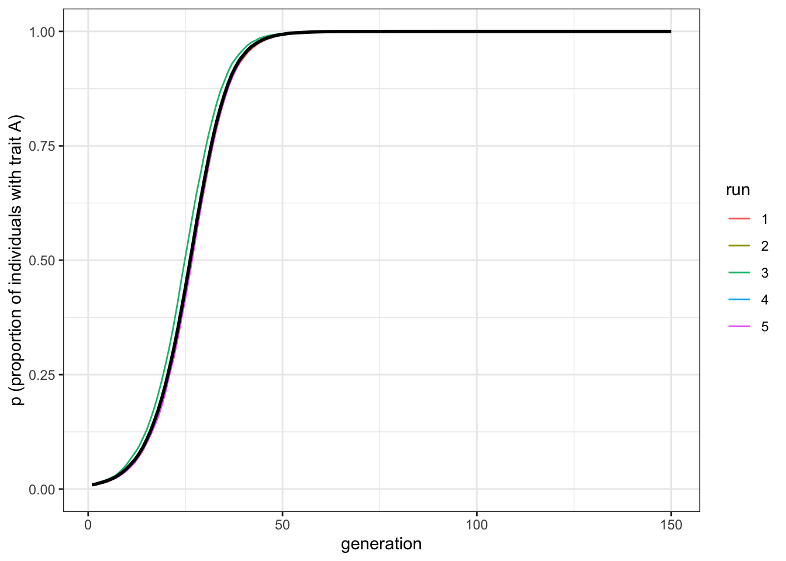
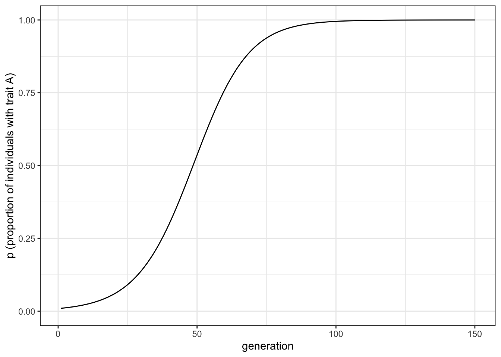

3 Biased transmission: direct bias
So far we have looked at unbiased transmission (Chapter 1) and mutation, both unbiased and biased (Chapter 2). Let’s complete the set by looking at biased transmission. This occurs when one trait is more likely to be copied than another trait. When the choice depends on features of the trait, it is often called ‘direct’ or ‘content’ bias. When the choice depends on features of the demonstrators (the individuals from whom one is copying), it is often called ‘indirect’ or ‘context’ bias. Both are sometimes also called ‘cultural selection’ because one trait is selected to be copied over another trait. In this chapter, we will look at trait-based (direct, content) bias.
(As an aside, there is a confusing array of terminology in the field of cultural evolution, as illustrated by the preceding paragraph. That’s why models are so useful. Words and verbal descriptions can be ambiguous. Often the writer doesn’t realise that there are hidden assumptions or unrecognised ambiguities in their descriptions. They may not realise that what they mean by ‘cultural selection’ is entirely different to how someone else uses it. Models are great because they force us to precisely specify exactly what we mean by a particular term or process. We can use the words in the paragraph above to describe biased transmission, but it’s only really clear when we model it, making all our assumptions explicit.)
To simulate biased transmission, following the simulations in Chapter 1, we assume there are two traits \(A\) and \(B\), and that each individual chooses another individual from the previous generation at random. This time, however, we give the traits two different probabilities of being copied: we can call them, \(s_a\) and \(s_b\) respectively. When an individual encounters another individual with trait \(A\), they will copy them with probability \(s_a\). When they encounter an individual with trait \(B\), they will copy them with probability \(s_b\).
With \(s_a=s_b\), copying is unbiased, and individuals switch to the encountered alternative with the same probability. This reproduces the results of the simulations when transmission is unbiased. If \(s_a=s_b=1\), the model is exactly the same as in Chapter 1. The relevant situation in this chapter is when \(s_a>s_b\) (or vice versa), so that we have biased transmission. Perhaps \(A\) (or \(B\)) is a more effective tool, a more memorable story, or a more easily pronounced word.
Let’s first write the function, and then explore what happens in this case. Below is a function biased_transmission_direct() that implements all of these ideas.
library(tidyverse)
set.seed(111)
biased_transmission_direct <- function (N, s_a, s_b, p_0, t_max, r_max) {
output <- tibble(generation = rep(1:t_max, r_max), p = rep(NA, t_max * r_max), run = as.factor(rep(1:r_max, each = t_max)))
for (r in 1:r_max) {
population <- tibble(trait = sample(c("A", "B"), N, replace = TRUE, prob = c(p_0, 1 - p_0))) # create first generation
output[output$generation == 1 & output$run == r, ]$p <- sum(population$trait == "A") / N # add first generation's p for run r
for (t in 2:t_max) {
previous_population <- population # copy individuals to previous_population tibble
demonstrator_trait <- tibble(trait = sample(previous_population$trait, N, replace = TRUE))
# for each individual, pick a random individual from the previous generation to act as demonstrator and store their trait
# biased probabilities to copy:
copy_a <- sample(c(TRUE, FALSE), N, prob = c(s_a, 1 - s_a), replace = TRUE)
copy_b <- sample(c(TRUE, FALSE), N, prob = c(s_b, 1 - s_b), replace = TRUE)
if (nrow(population[copy_a & demonstrator_trait == "A", ]) > 0) {
population[copy_a & demonstrator_trait == "A", ]$trait <- "A"
}
if (nrow(population[copy_b & demonstrator_trait == "B", ]) > 0) {
population[copy_b & demonstrator_trait == "B", ]$trait <- "B"
}
output[output$generation == t & output$run == r, ]$p <- sum(population$trait == "A") / N # get p and put it into output slot for this generation t and run r
}
}
output # export data from function
}Most of biased_transmission_direct() is recycled from the previous models. As before, we initalise the data structure output from multiple runs, and in generation \(t = 1\), we create a population tibble to hold the trait of each individual.
The major change is that we now include biased transmission. We first select at random the demonstrators from the previous generation (using the same code we used in unbiased_transmission()) and we store their trait in demonstrator_trait. Then we get the probabilities to copy \(A\) and to copy \(B\) for the entire population, using the same code used in biased_mutation(), only that this time it produces a probability to copy. Again using the same code as in biased mutation(), we have the individuals copy the trait at hand with the desired probability.
Let’s run our function biased_transmission_direct(). As before, to plot the results, we can use the same function plot_multiple_runs() we wrote in Chapter 1.
As noted above, the interesting case is when one trait is favored over the other. We can assume, for example, \(s_a=0.1\) and \(s_b=0\). This means that when individuals encounter another individual with trait \(A\) they copy them 1 in every 10 times, but, when individuals encounter another individual with trait \(B\), they never switch. We can also assume that the favoured trait, \(A\), is initially rare in the population (\(p_0=0.01\)) to see how selection favours this initially-rare trait (Note that \(p_0\) needs to be higher than 0; since there is no mutation in this model, we need to include at least some \(A\)s at the beginning of the simulation, otherwise it would never appear).
data_model <- biased_transmission_direct(N = 10000, s_a = 0.1, s_b = 0 , p_0 = 0.01, t_max = 150, r_max = 5)
plot_multiple_runs(data_model)
With a moderate selection strength we can see that \(A\) gradually replaces \(B\) and goes to fixation. It does this in a characteristic manner: the increase is slow at first, then picks up speed, then plateaus.
Note the difference to biased mutation. Where biased mutation was r-shaped, with a steep initial increase, biased transmission is s-shaped, with an initial slow uptake. This is because the strength of biased transmission (like selection in general) is proportional to the variation in the population. When \(A\) is rare initially, there is only a small chance of picking another individual with \(A\). As \(A\) spreads, the chances of picking an \(A\) individual increases. As \(A\) becomes very common, there are few \(B\) individuals left to switch. In the case of biased mutation, instead, the probability to switch is independent from the variation in the population.
3.1 Strentgh of selection
On what does the strength of selection depend? First, the strength is independent from the specific values of \(s_a\) and \(s_b\). What counts is their relative difference, in this case \(s_a-s_b = 0.1\). If we run a simulation with, say, \(s_a=0.6\) and \(s_b=0.5\), we see the same pattern, albeit with slightly more noise. That is, the single runs are more different from one another compared to the previous simulation. This is due to the fact that switches from \(A\) to \(B\) are now also possible.
data_model <- biased_transmission_direct(N = 10000, s_a = 0.6, s_b = 0.5 , p_0 = 0.01, t_max = 150, r_max = 5)
plot_multiple_runs(data_model)
To change the selection strength, we need to modify the difference between \(s_a\) and \(s_b\). We can double the strength by setting \(s_a = 0.2\), and keeping \(s_b=0\).
data_model <- biased_transmission_direct(N = 10000, s_a = 0.2, s_b = 0 , p_0 = 0.01, t_max = 150, r_max = 5)
plot_multiple_runs(data_model)
As we might expect, increasing the strength of selection increases the speed with which \(A\) goes to fixation. Note, though, that it retains the s-shape.
3.2 Summary of the model
We have seen how biased transmission causes a trait favoured by cultural selection to spread and go to fixation in a population, even when it is initially very rare. Biased transmission differs in its dynamics from biased mutation. Its action is proportional to the variation in the population at the time at which it acts. It is strongest when there is lots of variation (in our model, when there are equal numbers of \(A\) and \(B\) at \(p = 0.5\)), and weakest when there is little variation (when \(p\) is close to 0 or 1).
3.3 Analytical appendix
As before, we have \(p\) individuals with trait \(A\), and \(1 - p\) individuals with trait \(B\). As we saw that what is important is the relative difference between the two probabilities of being copied associated to the two traits and not their absolute value, we consider always \(s_b=0\), and vary \(s_a\), which we can call simply \(s\). Thus, the \(p\) individuals with trait \(A\) always keep their \(A\)s. The \(1 - p\) individuals with trait \(B\) pick another individual at random, hence with probability \(p\), and with probability \(s\) they switch to trait \(A\). We can therefore write the recursion for \(p\) under biased transmission as:
\[p' = p + p(1-p)s \hspace{30 mm}(3.1)\]
The first term on the right-hand side is the unchanged \(A\) bearers, and the second term is the \(1-p\) \(B\)-bearers who find one of the \(p\) \(A\)-bearers and switch with probability \(s\).
Here is some code to plot this biased transmission recursion:
t_max <- 150
s <- 0.1
pop_analytical <- tibble(p = rep(NA, t_max), generation = 1:t_max)
pop_analytical$p[1] <- 0.01
for (i in 2:t_max) {
pop_analytical$p[i] <- pop_analytical$p[i - 1] + pop_analytical$p[i - 1] * (1 - pop_analytical$p[i - 1]) * s
}
ggplot(data = pop_analytical, aes(y = p, x = generation)) +
geom_line() +
ylim(c(0, 1)) +
theme_bw() +
labs(y = "p (proportion of individuals with trait A)")
The curve above should be identical to the simulation curve, given that the simulation had the same biased transmission strength \(s\) and a large enough \(N\) to minimise stochasticity.
From the equation above, we can see how the strength of biased transmission depends on variation in the population, given that \(p(1 - p)\) is the formula for variation. This determines the shape of the curve, while \(s\) determines the speed with which the equilibrium \(p^*\) is reached.
But what is the equilibrium \(p^*\) here? In fact there are two. As before, the equilibrium can be found by setting the change in \(p\) to zero, or when:
\[p(1-p)s = 0 \hspace{30 mm}(3.2)\]
There are three ways in which the left-hand side can equal zero: when \(p = 0\), when \(p = 1\) and when \(s = 0\). The last case is uninteresting: it would mean that biased transmission is not occurring. The first two cases simply say that if either trait reaches fixation, then it will stay at fixation. This is to be expected, given that we have no mutation in our model. It contrasts with unbiased and biased mutation, where there is only one equilibrium value of \(p\).
We can also say that \(p = 0\) is an unstable equilibrium, meaning that any slight perturbation away from \(p = 0\) moves \(p\) away from that value. This is essentially what we simulated above: a slight perturbation up to \(p = 0.01\) went all the way up to \(p = 1\). In contrast, \(p = 1\) is a stable equilibrium: any slight perturbation from \(p = 1\) immediately goes back to \(p = 1\).
3.4 Further reading
Boyd and Richerson (1985) modelled direct bias, while Henrich (2001) added directly biased transmission to his guided variation / biased mutation model, showing that this generates s-shaped curves similar to those generated here. Note though that subsequent work has shown that s-shaped curves can be generated via other processes (e.g. Reader (2004)), and should not be considered definite evidence for biased transmission.
References
Boyd, Robert, and Peter J. Richerson. 1985. Culture and the Evolutionary Process. Culture and the Evolutionary Process. Chicago, IL, US: University of Chicago Press.
Henrich, Joseph. 2001. “Cultural Transmission and the Diffusion of Innovations.” American Anthropologist 103 (4): 992–1013.
Reader, S. M. 2004. “Distinguishing Social and Asocial Learning Using Diffusion Dynamics.” Learning and Behavior 32: 90–104.